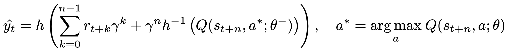
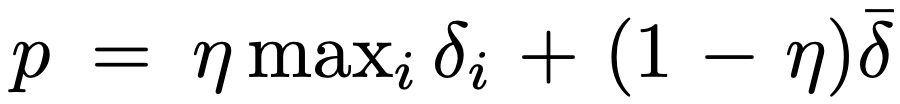
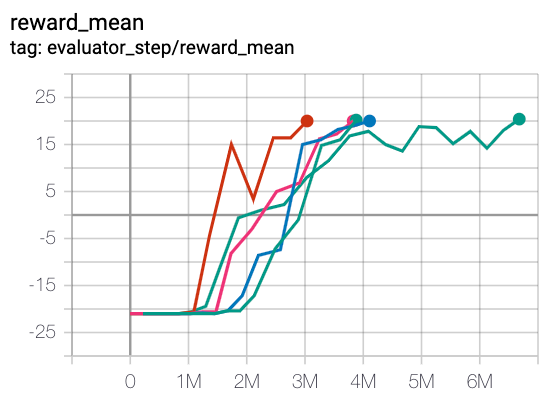
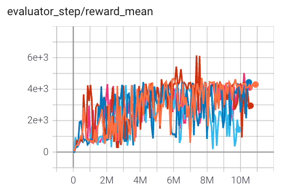
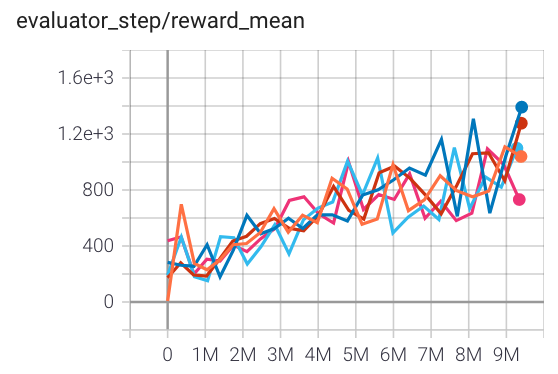

R2D2¶
Overview¶
R2D2 was first proposed in Recurrent experience replay in distributed reinforcement learning. In RNN training with experience replay, the RL algorithms usually face the problem of representational drift and recurrent state staleness. R2D2 utilizes two approaches: stored states and burn-in to mitigate the aforementioned effects. R2D2 agent integrates these findings to achieve significant advances in the state of the art on Atari-57 and matches the state of the art on DMLab-30. The authors claim that, Recurrent Replay Distributed DQN (R2D2) is the first agent to achieve this using a single network architecture and fixed set of hyper-parameters.
Quick Facts¶
R2D2 is an off-policy, model-free and value-based RL algorithm,
R2D2 is essentially a DQN-based algorithm using a distributed framework, double Q networks, dueling architecture, n-step TD loss, and prioritized experience replay.
R2D2 now only supports discrete action spaces and uses eps-greedy for exploration same as DQN.
R2D2 uses the stored state and burn_in techniques to mitigate the effects of representational drift and recurrent state staleness.
The DI-engine implementation of R2D2 provides res_link key to support residual link in recurrent Q network.
Key Equations or Key Graphs¶
R2D2 agent is most similar to Ape-X, built upon prioritized distributed replay and n-step double Q-learning (with n = 5), generating experience by a large number of actors (typically 256) and learning from batches of replayed experience by a single learner. The Q network of R2D2 use the dueling network architecture and provide an LSTM layer after the convolutional stack.
Instead of regular \((s, a, r, s^')\) transition tuples, R2D2 stores fixed-length (m = 80) sequences of \((s, a, r)\) in replay, with adjacent sequences overlapping each other by 40 time steps, and never crossing episode boundaries. Specifically, the n-step targets used in R2D2 is:
{kind=link}
Here, \(\theta^{-}\) denotes the target network parameters which are copied from the online network parameters \(\theta\) every 2500 learner steps.
R2D uses the mixture of max and mean absolute n-step TD-errors \(\delta_i\) as prioritization metrics for prioritized experience replay over the sequence:
{kind=link}
Note
In our DI-engine implementation, at each unroll step, the input to the LSTM-based Q network is just observation and the last hidden state, excluding reward and one-hot action.
For more details about how to use RNN in DI-engine, users can refer to How to use RNN, for data arrangement process in R2D2, users can refer to the section data-arrangement, for the burn-in technique in R2D2, users can refer to the section burn-in-in-r2d2.
Extensions¶
R2D2 can be combined with:
Learning from demonstrations
Users can refer to R2D3 paper and R2D3 doc of our R2D3 implementation. R2D3 is an agent that makes efficient use of demonstrations to solve hard exploration problems in partially observable environments with highly variable initial conditions.
Transformers
Transformers-based agents take advantage of their powerful attention mechanism to learn better policies in those environments where long-term memory can be beneficial. Users can refer to GTrXL paper and r2d2_gtrxl doc of our GTrXL implementation.
Implementations¶
The default config of R2D2Policy is defined as follows:
- class ding.policy.r2d2.R2D2Policy(cfg: dict, model: Optional[Union[type, torch.nn.modules.module.Module]] = None, enable_field: Optional[List[str]] = None)[source]
- Overview:
Policy class of R2D2, from paper Recurrent Experience Replay in Distributed Reinforcement Learning . R2D2 proposes that several tricks should be used to improve upon DRQN, namely some recurrent experience replay tricks such as burn-in.
- Config:
ID
Symbol
Type
Default Value
Description
Other(Shape)
1
typestr
dqn
RL policy register name, refer toregistryPOLICY_REGISTRYThis arg is optional,a placeholder2
cudabool
False
Whether to use cuda for networkThis arg can be diff-erent from modes3
on_policybool
False
Whether the RL algorithm is on-policyor off-policy4
prioritybool
False
Whether use priority(PER)Priority sample,update priority5
priority_IS_weightbool
False
Whether use Importance Sampling Weightto correct biased update. If True,priority must be True.6
discount_factorfloat
0.997, [0.95, 0.999]
Reward’s future discount factor, aka.gammaMay be 1 when sparsereward env7
nstepint
3, [3, 5]
N-step reward discount sum for targetq_value estimation8
burnin_stepint
2
The timestep of burnin operation,which is designed to RNN hidden statedifference caused by off-policy9
learn.updateper_collectint
1
How many updates(iterations) to trainafter collector’s one collection. Onlyvalid in serial trainingThis args can be varyfrom envs. Bigger valmeans more off-policy10
learn.batch_sizeint
64
The number of samples of an iteration11
learn.learning_ratefloat
0.001
Gradient step length of an iteration.12
learn.value_rescalebool
True
Whether use value_rescale function forpredicted value13
learn.target_update_freqint
100
Frequence of target network update.Hard(assign) update14
learn.ignore_donebool
False
Whether ignore done for target valuecalculation.Enable it for somefake termination env15
collect.n_sampleint
[8, 128]
The number of training samples of acall of collector.It varies fromdifferent envs16
collect.unroll_lenint
1
unroll length of an iterationIn RNN, unroll_len>1
The network interface R2D2 used is defined as follows:
- class ding.model.template.q_learning.DRQN(obs_shape: Union[int, ding.utils.type_helper.SequenceType], action_shape: Union[int, ding.utils.type_helper.SequenceType], encoder_hidden_size_list: ding.utils.type_helper.SequenceType = [128, 128, 64], dueling: bool = True, head_hidden_size: Optional[int] = None, head_layer_num: int = 1, lstm_type: Optional[str] = 'normal', activation: Optional[torch.nn.modules.module.Module] = ReLU(), norm_type: Optional[str] = None, res_link: bool = False)[source]
- Overview:
DQN + RNN = DRQN
- forward(inputs: Dict, inference: bool = False, saved_state_timesteps: Optional[list] = None) Dict[source]
- Overview:
Use observation tensor to predict DRQN output. Parameter updates with DRQN’s MLPs forward setup.
- Arguments:
inputs (
Dict):- inference: (:obj:’bool’): if inference is True, we unroll the one timestep transition,
if inference is False, we unroll the sequence transitions.
- saved_state_timesteps: (:obj:’Optional[list]’): when inference is False,
we unroll the sequence transitions, then we would save rnn hidden states at timesteps that are listed in list saved_state_timesteps.
- ArgumentsKeys:
obs (
torch.Tensor): Encoded observationprev_state (
list): Previous state’s tensor of size(B, N)
- Returns:
- outputs (
Dict): Run
MLPwithDRQNsetups and return the result prediction dictionary.
- outputs (
- ReturnsKeys:
logit (
torch.Tensor): Logit tensor with same size as inputobs.next_state (
list): Next state’s tensor of size(B, N)
- Shapes:
obs (
torch.Tensor): \((B, N=obs_space)\), where B is batch size.prev_state(
torch.FloatTensor list): \([(B, N)]\)logit (
torch.FloatTensor): \((B, N)\)next_state(
torch.FloatTensor list): \([(B, N)]\)
- Examples:
>>> # Init input's Keys: >>> prev_state = [[torch.randn(1, 1, 64) for __ in range(2)] for _ in range(4)] # B=4 >>> obs = torch.randn(4,64) >>> model = DRQN(64, 64) # arguments: 'obs_shape' and 'action_shape' >>> outputs = model({'obs': inputs, 'prev_state': prev_state}, inference=True) >>> # Check outputs's Keys >>> assert isinstance(outputs, dict) >>> assert outputs['logit'].shape == (4, 64) >>> assert len(outputs['next_state']) == 4 >>> assert all([len(t) == 2 for t in outputs['next_state']]) >>> assert all([t[0].shape == (1, 1, 64) for t in outputs['next_state']])
Benchmark¶
environment |
best mean reward |
evaluation results |
config link |
comparison |
|---|---|---|---|---|
Pong (PongNoFrameskip-v4)
|
20 |
 | ||
Qbert (QbertNoFrameskip-v4)
|
6000 |
 | ||
SpaceInvaders (SpaceInvadersNoFrameskip-v4)
|
1400 |
 |
References¶
Kapturowski S, Ostrovski G, Quan J, et al. Recurrent experience replay in distributed reinforcement learning[C]//International conference on learning representations. 2018.
Volodymyr Mnih, Koray Kavukcuoglu, David Silver, Alex Graves, Ioannis Antonoglou, Daan Wierstra, Martin Riedmiller: “Playing Atari with Deep Reinforcement Learning”, 2013; arXiv:1312.5602.
Schaul, T., Quan, J., Antonoglou, I., & Silver, D. (2015). Prioritized experience replay. arXiv preprint arXiv:1511.05952.
Van Hasselt, H., Guez, A., & Silver, D. (2016, March). Deep reinforcement learning with double q-learning. In Proceedings of the AAAI conference on artificial intelligence (Vol. 30, No. 1).
Wang, Z., Schaul, T., Hessel, M., Hasselt, H., Lanctot, M., & Freitas, N. (2016, June). Dueling network architectures for deep reinforcement learning. In International conference on machine learning (pp. 1995-2003). PMLR.
Horgan D, Quan J, Budden D, et al. Distributed prioritized experience replay[J]. arXiv preprint arXiv:1803.00933, 2018.